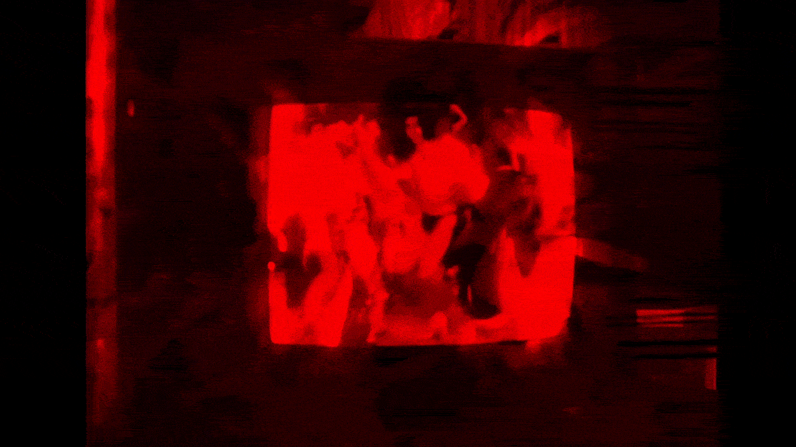
An excerpt of the editorial written for the project and some other relevant aspects:
«DEVIANT aims to create a dialogue that reveals empowerment from different perspectives, aiming to be a space of freedom, free from judgment—a refuge
of (self) expression for those who are marginalized in the 21st century. Each publication derives from the experience in a significant space, seeking to establish ramifications with other subjects
and events of the same nature. Countercultural movements are supported, recognizing and emphasizing their value, as well as protecting and defending an expression of minorities (or majorities)
victimized by a (still) prejudiced society.
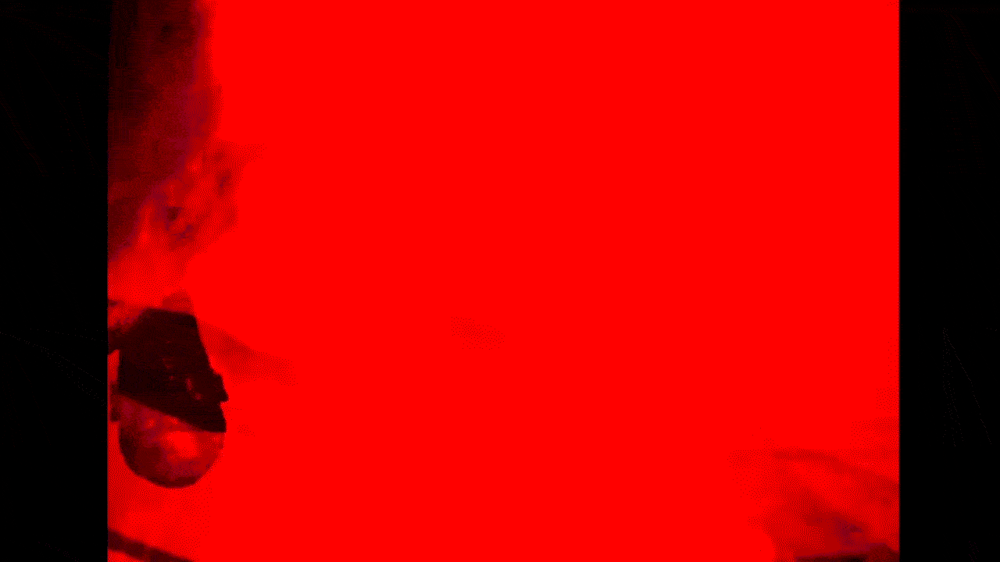
The first edition, «The Night as A Place», of DEVIANT is dedicated to clubbing, identity, music and the way in which, in the late 20th century, these nocturnal spaces served as a safe space for those who yearned to be themselves; they were—and still are—escapes from a world that does not allow one to assume its own identity without any restriction, embarrassment or fear of not being accepted by a society with a matrix of recognition that is sometimes hateful and harmful.
It is hoped that there is a reflection on society, creating a rupture from the rigid standards that it imposes so that a future can be looked at with a more hopeful and inclusive perspective, and less cruel and restrictive.»
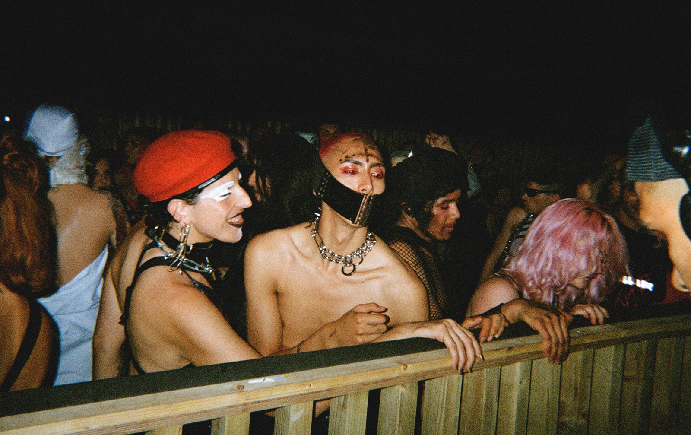
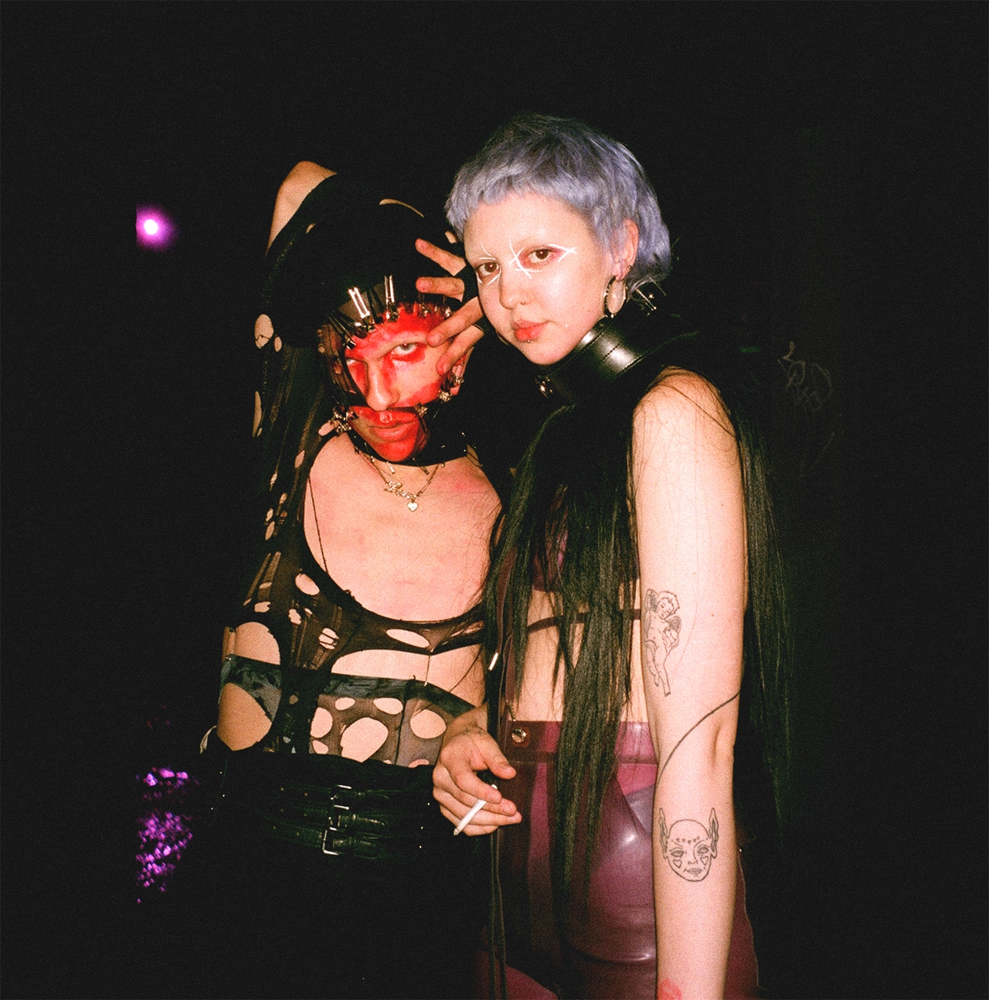
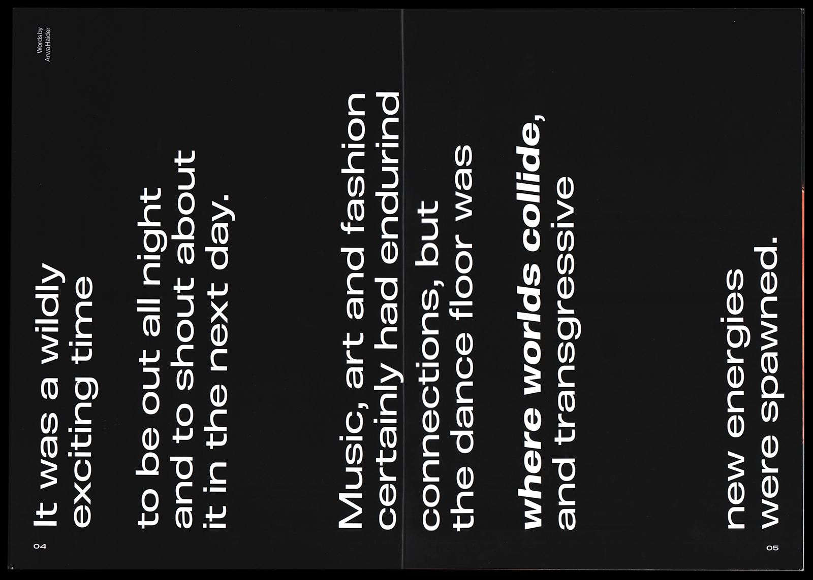
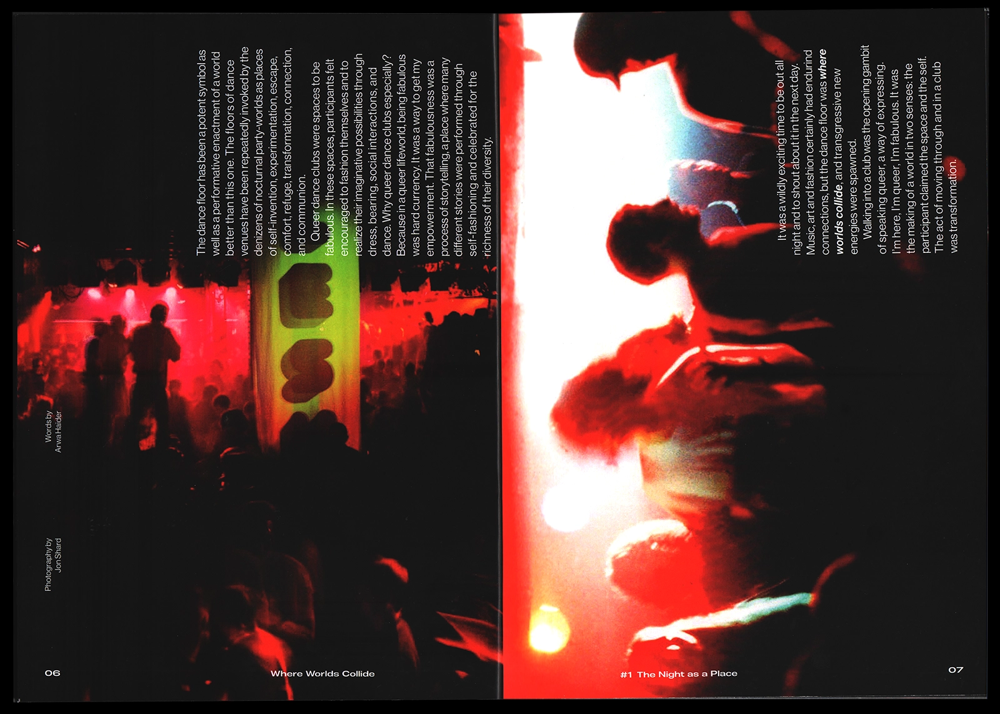
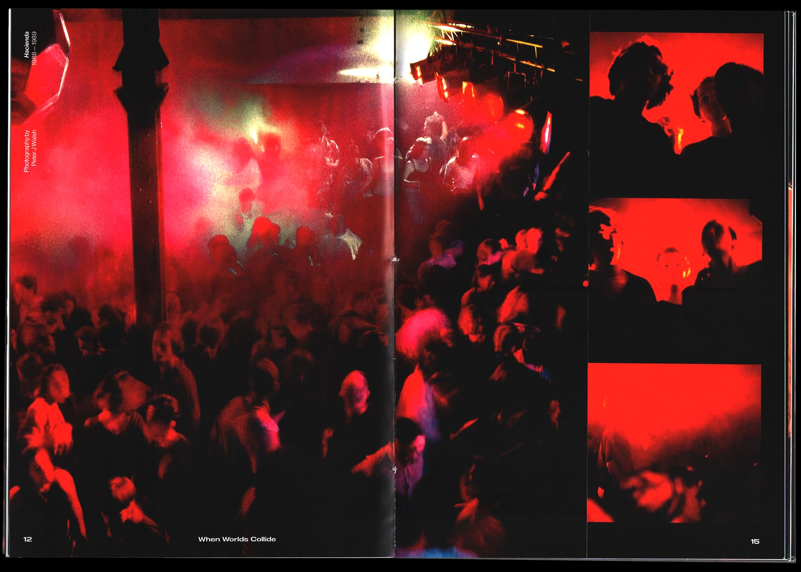
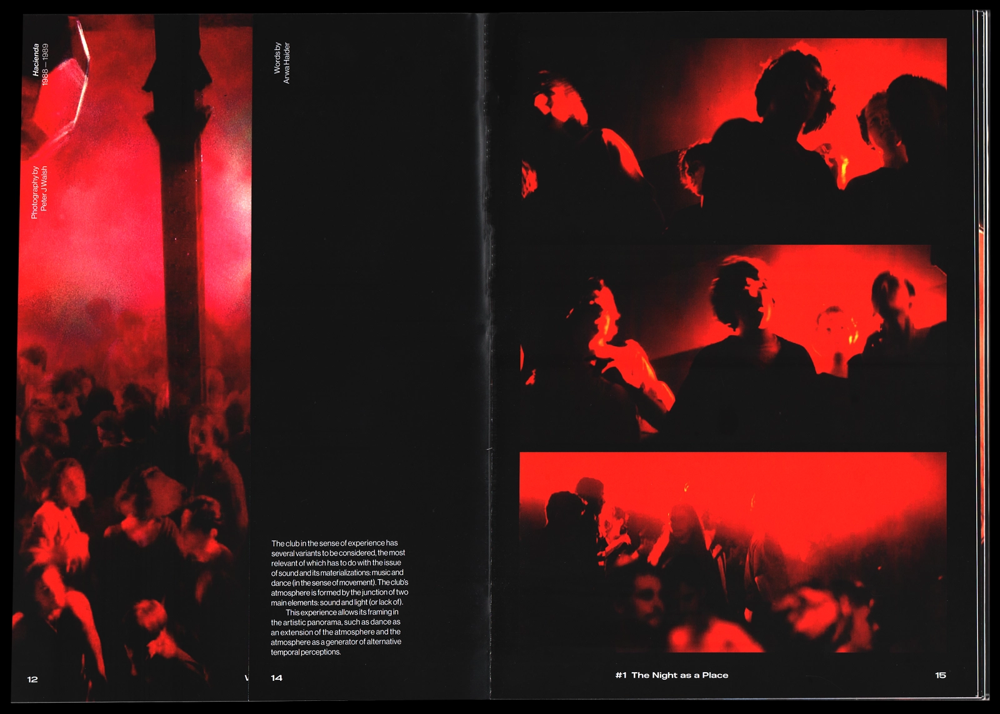
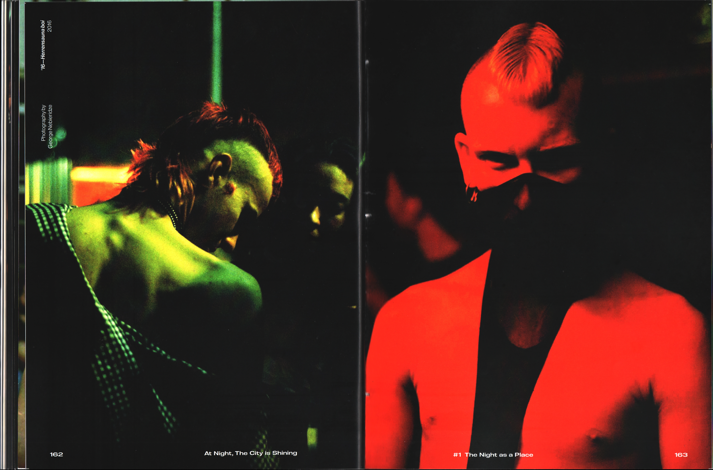
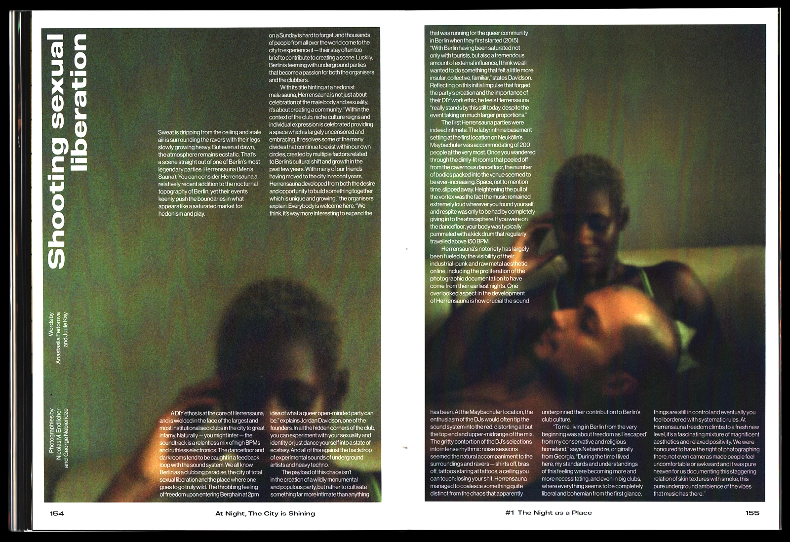
As part of this project, we were also asked to create an installation that would serve as a space for a hypothetical launch of the magazine. In this sense, my colleagues Maria and Rodrigo and I made a short audiovisual that was shown during the visit to the space we staged. Below is the transcript of the narrated text that we wrote, some photos of the staged space and the audiovisual.
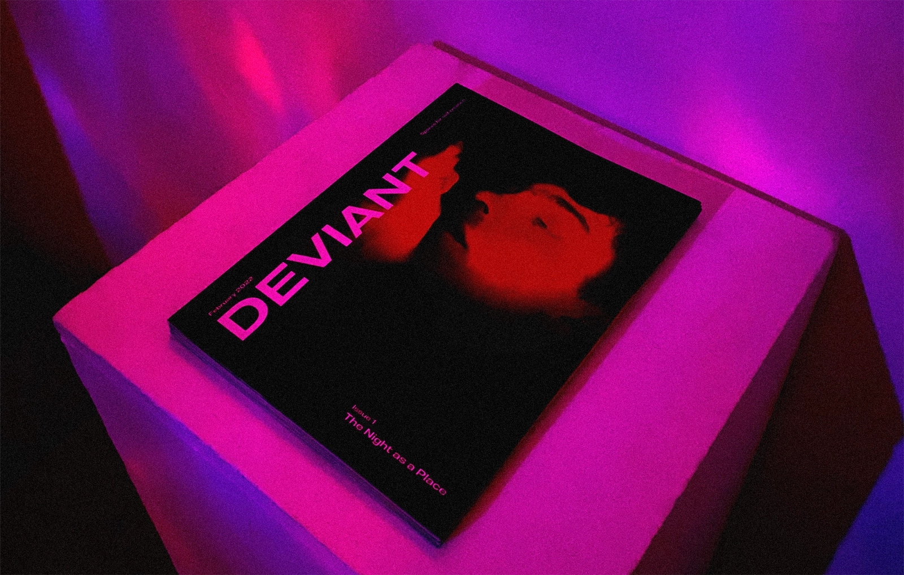
«Lately, everything’s been weird. The feeling of frustration and vulnerability, the fragmentation of time, space and memory, the lack of solid ground. Things have changed and it’s time to look back at where we were and try to (re)start everything—coming back home, whatever what you call home. For me, I would like to come back to dance clubs, a safe space where I am encouraged to fashion myself and I get to realize my own world, imagining the possibilities I could have through dressing, shouting, interacting and, mostly important, dancing.
When I started to dance at clubs, I reaffirmed the knowledge I had begun to accumulate in my parents’ living room, but this time it was a shared knowledge and a celebration of this exchange, which seemed to open possibilities in everyday life. Dancing in queer clubs plays a huge role in queer world-making through its physicality and through its embodiment of experience, identity and community. Although this could never be a story with one voice.
The dance floor is packed with stories, all pulsating with their own experiences and needs. Any queer dance floor is a node in which many weaving, layered maps meet. Any one of these maps is part of a queer lifeworld. A queer lifeworld can be created, articulated, embodied, performed, expressed, and contested.
The concept of lifeworld is useful for what are, after all, environments created by their participants that contain many voices, many practices, and not a few tensions. In that way, slow down, listen, and think of new ways to build new futures, new lifeworlds. And after you spend some time in silence and solitude, think of how your own voice, your music, and your actions have power and value.
What kind of future do you imagine? Can you start all over again? Can you stand with those who cannot come home now and feel like it’s really dark outside?»
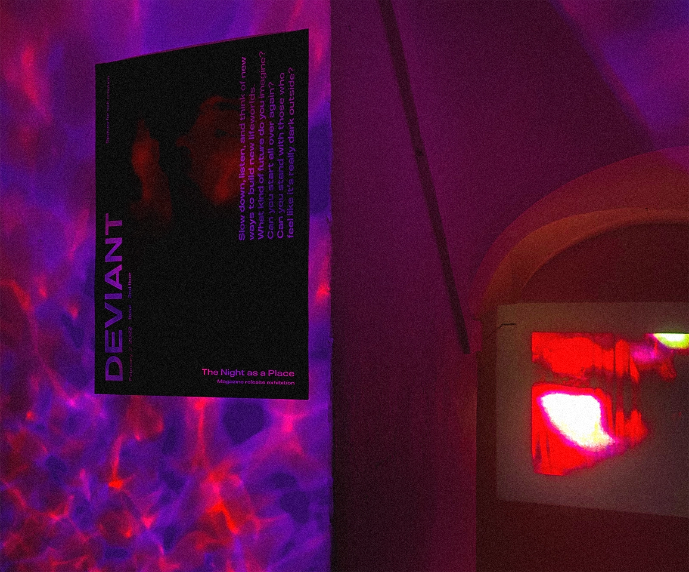
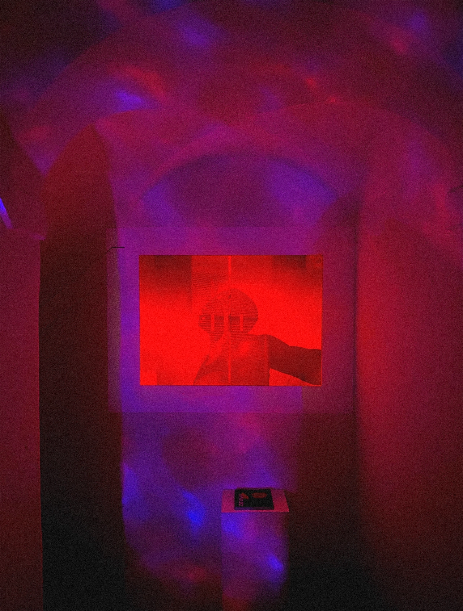
1. Concept, research, editing, writting, editorial design and video editing
Duarte da Costa, Maria Proença and Rodrigo Amâncio.
2. Main texts and photographs
Adam Scull, Aimee Cliff, Allan Tannenbaum, Ana Tabatadze, Anastasiia Feredova, Andres Lander, Arlene Gottfried, Arwa Haider, Autumn Gradingen, Briac Julliand, Cyrus Dunham, Damien Frost, Dave Swidells, David Wouters, Didier Lestrade, Erik Morse, Fergus Green, George Nebieridze, Hasse Persson, Heiko Hoffmann, Ian Schrager, Jamie Morgan, Jane Morineau, Jenny Brough, Jilke Golbach, Joey Levenson, John Shard, Jon Shard, Juule Kay, Lanee Bird, Latham Phillips, Lauren Cochrane, Lisa Blanning, Luc Bertrand, Madaleine Seidel, Mark Ronson, Marta Espinosa, Matt Lambert, Max Ström, Michael Bailey-Gates, Miss Rosen, Muriel Zagha, Nan Golding, Nicholas M. Endlicher, Nino Gabisonia, Patrick Quick, Paul Hartnett, Peter Hujar, Peter J. Walsh, Rafael Medina, Rob Wilkes, Ron Galella, Roxy Lee, Syros Rennt, Tilman Brembs, Thomas Curry, Vera Magalhães, Victor Air and Victor Luque.
3. Objects
Publication (200x270mm, 189pp.) and Audiovisual (3'15'').
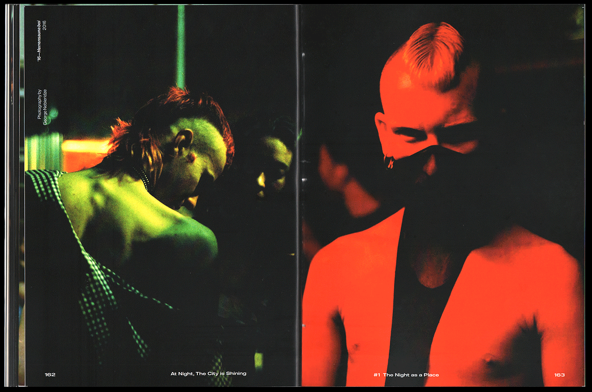